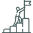

Особисті консультації
Досягнення поставленої мети буває складним завданням, але за правильної підтримки немає нічого неможливого

Досягнення поставленої мети буває складним завданням, але за правильної підтримки немає нічого неможливого

У будь-якої родини бувають кризові ситуації, тому в такі моменти важливо підтримувати одне одного.

Групові заняття — чудове місце, щоб навчитися спілкуватися з оточуючими людьми та розкрити свій потенціал
Далеко-далеко за словесними горами країни голосних і приголосних живуть рибні тексти. Вдалині від усіх живуть вони в буквених будинках на березі Семантика великого мовного океану. Маленький струмок Даль дзюрчить по всій країні та забезпечує її всіма необхідними правилами. Ця парадигматична країна, в якій смажені члени речення залітають прямо.

120 хв
Оптимально для того, щоб знайти вихід та зробити черговий крок
від 500 грн
Ціна доступна для будь-якої людини, яка потребує допомоги
250+
Результат — улыбка на лице и ощущение счастья
Звернулася до Сергія, бо нерви вже були на межі. Ситуація здавалася мені безвихідною – незважаючи на те, що я працюю і навчаюсь. Сама не помітила, як позбулася величезної грудки. Нарешті побачила вихід із ситуації, що склалася, і тепер є надія... Велике спасибі Валентину.

Я працюю, проводжу консультації з понеділка по суботу з 15:00 до 21:00. Записатися на прийом можна будь-якого дня з 9:00 до 21:00